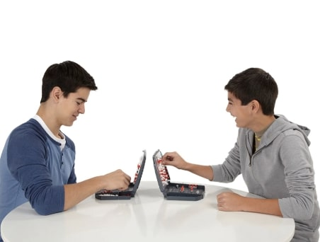
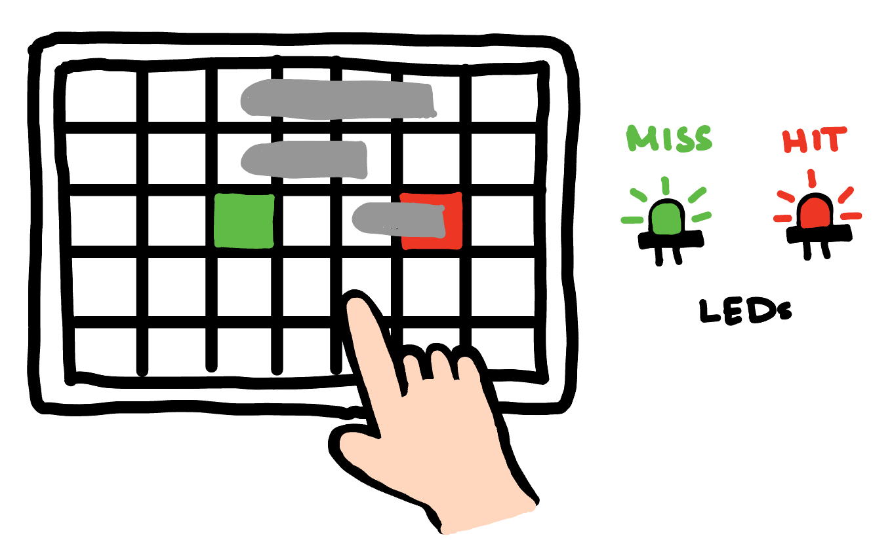

# Final Project Idea: Booming Battle Board 🚢💥
---
### Traditional Battleship
- A two player game where each player has two grids in front of them:
- **Own board** – where their ships are placed, marked when they’ve been hit
- **Tracking board** – where they mark coordinates they’ve attacked
- Players take turns attacking by picking coordinates
- Objective: sink all of the opponent’s ships
- If the ship lies in the chosen coordinate → it’s a **hit**
- If not → it’s a **miss**
- A ship is sunk when all its cells are hit
- Players keep track of called cells on their grid
<div style="text-align:center;">

</div>
---
### My Twist on Battleship
A two-player Battleship board with **LED feedback** and **sensors**!
Instead of calling out coordinates, players physically tap the grid:
- Board lights up **red** for “hit”
- Board lights up **white** for “miss”
- Sound effects for immersion
<div style="text-align:center;">

</div>
---
### 3D Design and Fabrication
- Laser cutting: create grid plates with engraved coordinates + frosted LED tiles
- 3D printing: ships and casing for board grids
---
### Electronics (Input and Output)
**Inputs:**
- Ship detection:
- Magnetic → embed magnets in ships + Hall sensors under tiles
- Conductive → foil in ships + capacitive pads under tiles
- Capacitive touch grid → detects tapped cells
**Outputs:**
- RGB LEDs under each tile:
- 🔴 Red = hit opponent’s ship
- ⚪ White = miss
- 🟢 Green = ship on own board
- Sounds:
- 💥 Explosion = hit
- 💦 Splash = miss
---
### Microcontroller Programming
- Detects when a tile is tapped
- Detects when a ship is present
- Turns LEDs on/off
- Plays sounds